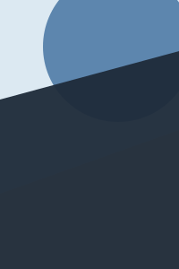

Frieren: Beyond Journey's End
episode 13 of 28
1080p · sub · aniwave
prev
next
episodes
14:02
/ 23:40
?
space
play
←→
10s
n
next
p
prev
f
fullscreen
esc
back
search
saved
recent
settings
built-in
Frieren: Beyond Journey's End
episode 13 of 28
1080p · sub · aniwave
prev
next
episodes
episode 14 in 5
···
Frieren: Beyond Journey's End
play now
stay
↵
play now
esc
stay
p
prev
search
saved
recent
settings
built-in
Frieren: Beyond Journey's End
episode 13 of 28
14:02
/ 23:40
?
audio
sub
dub
quality
best
1080p
720p
source
auto
aniwave
anidb

Frieren: Beyond Journey's End
28 episodes
aniwave + anidb
watched through 12
back
save
14:02
/ 23:40
?
playing episode 13 · 1080p sub aniwave
aniwave 28
anidb 28
1
2
3
4
5
6
7
8
9
10
11
12
13
14
15
16
17
18
19
20
21
22
23
24
25
26
27
28
space
play
←→
10s
tab
grid
n
next
f
fullscreen
esc
stop
search
saved
recent
settings
built-in